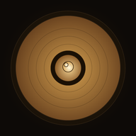
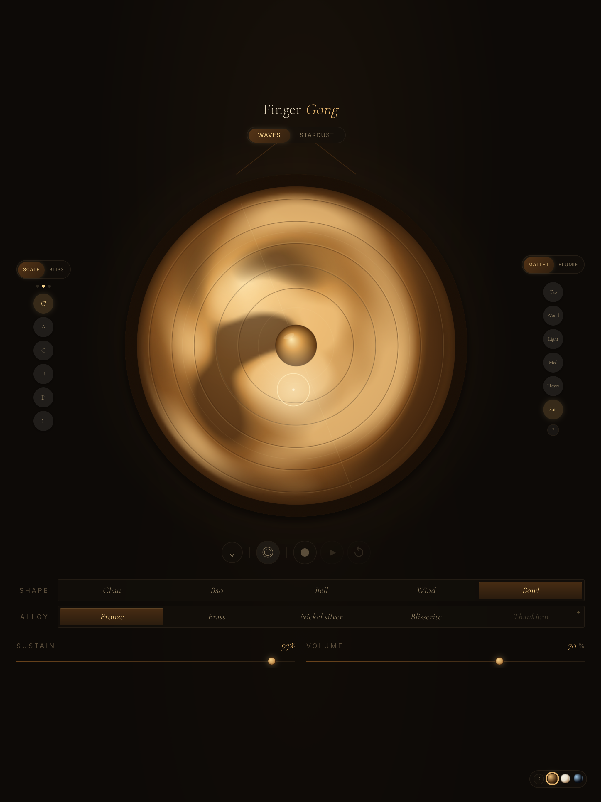
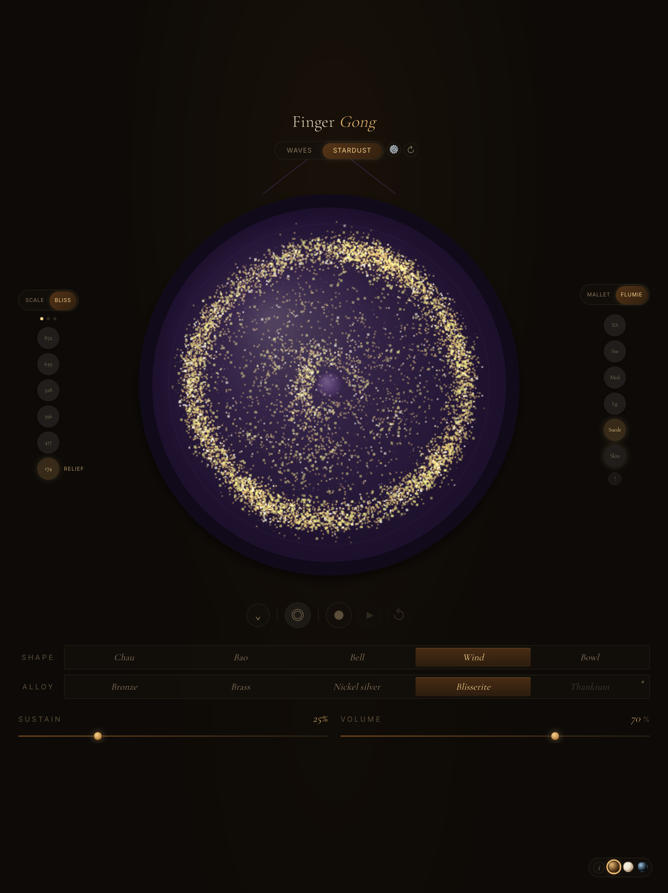
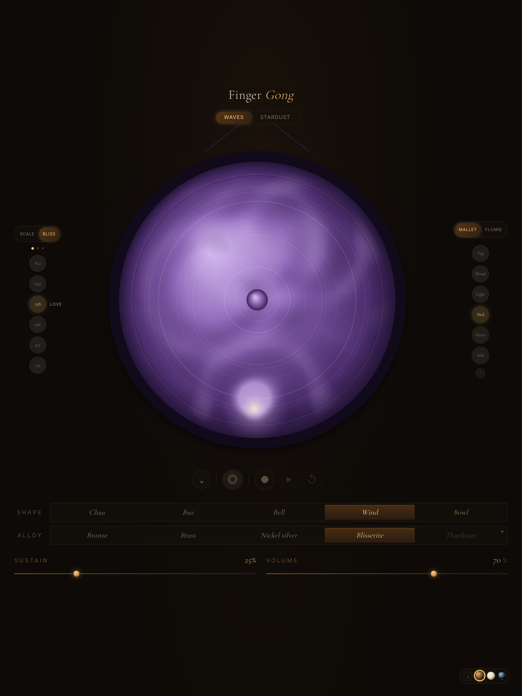
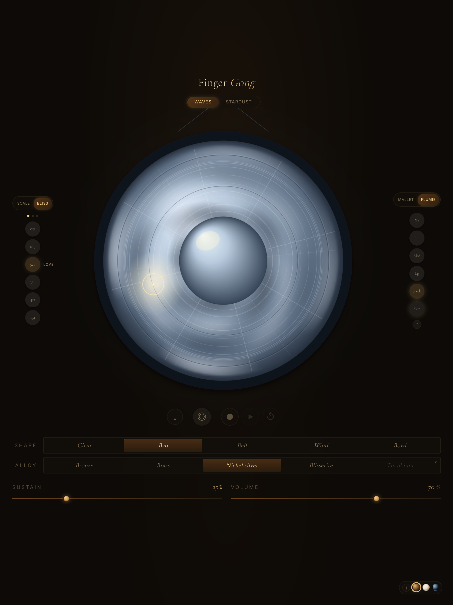
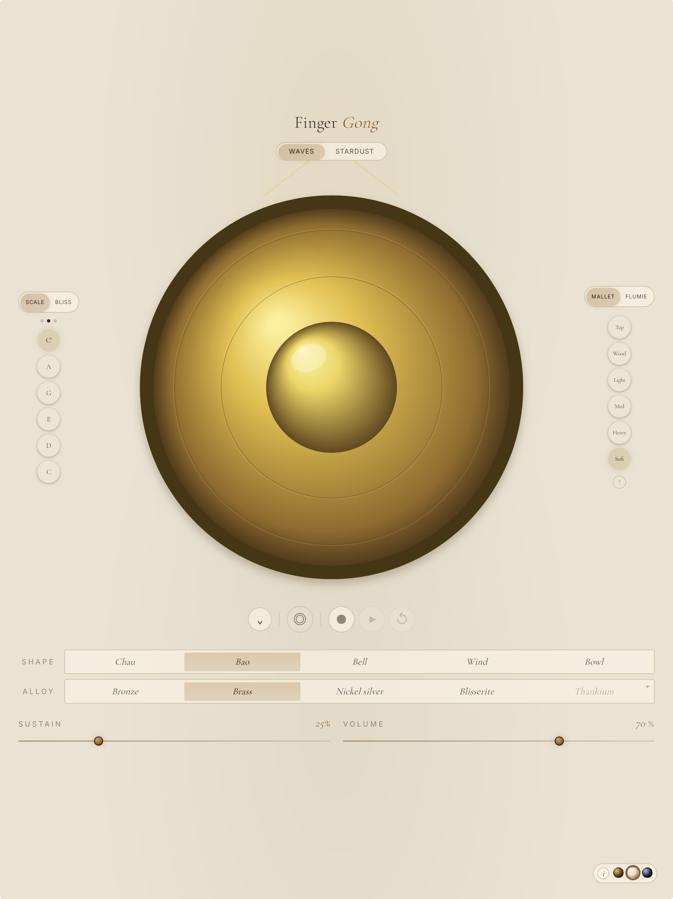
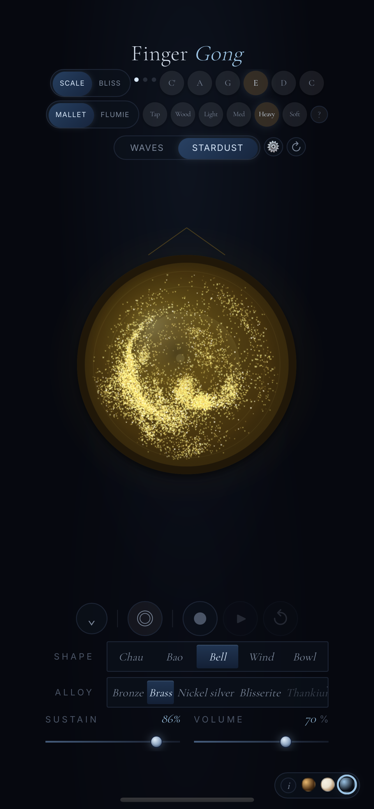

A gong synthesizer built from physics
Download for iOS
Touch the screen and the gong responds. Harmonics bloom, beat against each other, and slowly fade — the same way sound moves through real metal. Fourteen oscillators model the vibrational modes of a bronze disc, slightly detuned so the timbre shimmers and breathes.
A living instrument that never plays the same way twice.
A quick tap strikes the gong. Where you touch matters — the centre excites different modes than the rim. Five mallets shape the attack, from a bright wooden tap to a deep, soft impact.
Press and drag slowly around the rim. Harmonics build and couple as you move, creating textures that shift with your speed and pressure. This is how singing bowls are played.

In 1787, Ernst Chladni drew a violin bow along the edge of a metal plate covered in sand. The grains bounced away from the vibrating regions and settled on the still lines — the nodes — revealing the hidden geometry of sound.
Finger Gong recreates this experiment with ten thousand particles driven by the gong’s vibrational modes. Strike and watch them scatter. Wait, and they drift into nodal patterns — the same shapes Chladni saw two centuries ago.

Five gong shapes, each with different partial ratios defining its voice. Chau is the classic orchestral gong — rich and complex. Bowl uses measured modes from real singing bowls. Wind is bright and cascading. Bell rings with clarity. Bao is deep and focused.
Five alloys shift the character. Bronze is warm and long. Brass is bright. Nickel Silver is crisp. Blisserite glows. Each changes how the sound fades, how harmonics interact, how the mallet feels against the surface.

Curated presets for meditation, relaxation, and focused listening. Each tunes the gong to a specific shape, alloy, pitch, and sustain — combinations chosen for calm.
Pair Bliss with the friction mallet. Press gently and drag in slow circles. The gong begins to hum, then sing. Harmonics build and couple over seconds, creating textures that shift with your movement.
This is what the app was made for.

The same instrument, adapted for one hand.

Four sizes from a 14-inch hand gong to a 50-inch concert instrument. Pitch, volume, and sustain scale naturally.
Six notes on a pentatonic scale — C, D, E, G, A, C′. Play melodies or find a frequency that resonates.
Capture performances, save to a library, play back in a loop. Every strike, rub, and parameter change is kept.
Hearth, Paper, and Nocturne. Three visual moods for the same instrument.
Long-press to hide everything. The gong fills the screen. Touch anywhere to play. Just you and the sound.
Waveform, scrolling spectrogram, and radial harmonic spectrum. See the physics from different angles.